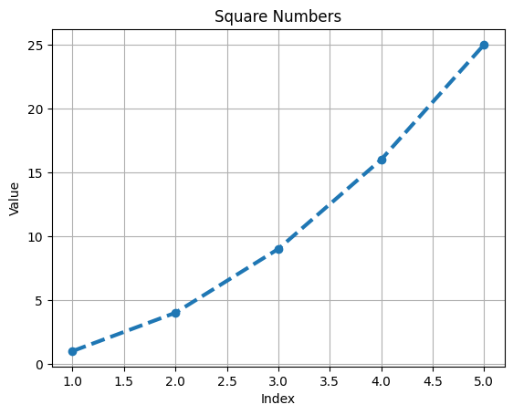

import matplotlib.pyplot as plt
squares = [1, 4, 9, 16, 25]
# Create a figure and axis
fig, ax = plt.subplots()
# Plot the squares with a blue line
ax.plot(squares, linewidth=3, marker='o', linestyle='--')
# Customize the plot
ax.set_title('Square Numbers')
ax.set_xlabel('Index')
ax.set_ylabel('Value')
ax.grid(True)
# Show the plot
plt.show()Learning outcomes
- Generate data sets and create visualizations
- Create simple plots with Matplotlib and use a scatter plot to explore random walks
- Create a histogram with Plotly and use a histogram to explore the results of rolling dice of different sizes
Plotting tools used
- Matplotlib- mathematical plotting library
- Plotly- visualizations which work with digital devices.
Plotting a line graph
Correcting the plot
import matplotlib.pyplot as plt
input_values = [1,2,3,4,5] #adding this would fix it
squares = [1, 4, 9, 16, 25]
# Create a figure and axis
fig, ax = plt.subplots()
# Plot the squares with a blue line
ax.plot(input_values, squares, linewidth=3, marker='o', linestyle='--')
# Customize the plot
ax.set_title('Square Numbers')
ax.set_xlabel('Index')
ax.set_ylabel('Value')
ax.grid(True)
# Show the plot
plt.show()
Using built-in Styles
import matplotlib.pyplot as plt
plt.style.available['Solarize_Light2',
'_classic_test_patch',
'_mpl-gallery',
'_mpl-gallery-nogrid',
'bmh',
'classic',
'dark_background',
'fast',
'fivethirtyeight',
'ggplot',
'grayscale',
'seaborn-v0_8',
'seaborn-v0_8-bright',
'seaborn-v0_8-colorblind',
'seaborn-v0_8-dark',
'seaborn-v0_8-dark-palette',
'seaborn-v0_8-darkgrid',
'seaborn-v0_8-deep',
'seaborn-v0_8-muted',
'seaborn-v0_8-notebook',
'seaborn-v0_8-paper',
'seaborn-v0_8-pastel',
'seaborn-v0_8-poster',
'seaborn-v0_8-talk',
'seaborn-v0_8-ticks',
'seaborn-v0_8-white',
'seaborn-v0_8-whitegrid',
'tableau-colorblind10']# using style
import matplotlib.pyplot as plt
input_values = [1,2,3,4,5] #adding this would fix it
squares = [1, 4, 9, 16, 25]
#use style
plt.style.use('fast')
# Create a figure and axis
fig, ax = plt.subplots()
# Plot the squares with a blue line
ax.plot(input_values, squares, linewidth=3, marker='o', linestyle='--')
# Customize the plot
ax.set_title('Square Numbers')
ax.set_xlabel('Index')
ax.set_ylabel('Value')
ax.grid(True)
# Show the plot
plt.show()Plotting and Styling Individual Points with scatter()
# using style
import matplotlib.pyplot as plt
input_values = [1,2,3,4,5] #adding this would fix it
squares = [1, 4, 9, 16, 25]
#use style
plt.style.use('fast')
# Create a figure and axis
fig, ax = plt.subplots()
# Plot the squares with a blue line
ax.scatter(2,4,s=200)
# Customize the plot
ax.set_title('Square Numbers')
ax.set_xlabel('Index')
ax.set_ylabel('Value')
ax.grid(True)
# Show the plot
plt.show()Caluculating data automatically
x_values = range(1,1001)
y_values = [x**2 for x in x_values]
plt.style.use('fast')
fig, ax = plt.subplots()
ax.scatter(x_values, y_values, s= 10)
# Customize the plot
ax.set_title('Square Numbers')
ax.set_xlabel('Index')
ax.set_ylabel('Value')
ax.grid(False)
#Set the range for each axis
ax.axis([0, 1100, 0, 1100000])
plt.show()Using a Colormap
import matplotlib.pyplot as plt
x_values = range(1, 1000)
y_values = [x**2 for x in x_values]
fig, ax = plt.subplots()
ax.scatter(x_values, y_values, s= 10)
ax.scatter(x_values, y_values, c= y_values, cmap= plt.cm.Blues, s=10)
# Customize the plot
ax.set_title('Square Numbers')
ax.set_xlabel('Index')
ax.set_ylabel('Value')
ax.grid(False)
plt.show()Saving the plots automatically
plt.savefig('squares_plot.png', bbox_inches= 'tight') #second argument trims extra white space<Figure size 640x480 with 0 Axes>Example
1. plot for first five cubic numbers.
2. plot for first 5000 cubic numbers.import matplotlib.pyplot as plt
# Function to calculate the cube of a number
def cube(x):
return x**3
# Generate the first five cubic numbers
first_five_cubic = [cube(x) for x in range(1, 6)]
# Generate the first 5000 cubic numbers
first_5000_cubic = [cube(x) for x in range(1, 5001)]
# Plot the first five cubic numbers
plt.figure(1)
plt.plot(range(1, 6), first_five_cubic, marker='o', linestyle='-', color='b')
plt.title("First Five Cubic Numbers")
plt.xlabel("Number")
plt.ylabel("Cubic Value")
# Plot the first 5000 cubic numbers
plt.figure(2)
plt.plot(range(1, 5001), first_5000_cubic, color='r')
plt.title("First 5000 Cubic Numbers")
plt.xlabel("Number")
plt.ylabel("Cubic Value")
# Show the plots
plt.show()Random walks (creating and plotting)
Creating
import random
class RandomWalk:
def __init__(self, num_points=5000):
self.num_points = num_points
self.x_values = [0]
self.y_values = [0]
def fill_walk(self):
while len(self.x_values) < self.num_points:
x_step = random.choice([-1, 1]) * random.choice([0, 1, 2, 3, 4])
y_step = random.choice([-1, 1]) * random.choice([0, 1, 2, 3, 4])
if x_step == 0 and y_step == 0:
continue
x = self.x_values[-1] + x_step
y = self.y_values[-1] + y_step
self.x_values.append(x)
self.y_values.append(y)Plotting
rw = RandomWalk()
rw.fill_walk()
plt.style.use('fast')
fig, ax = plt.subplots()
ax.scatter(rw.x_values, rw.y_values, s=15)
plt.show()Generating Multiple Random Walks
# just by wrapping the above code in a while loop
while True:
rw = RandomWalk()
rw.fill_walk()
plt.style.use('fast')
fig, ax = plt.subplots()
ax.scatter(rw.x_values, rw.y_values, s=15)
plt.show()
keep_running = input("Make another walk? (y/n): ")
if keep_running == 'n':
break
Make another walk? (y/n): y
Make another walk? (y/n): nStyling the walk
- after generating the list using range() function, we stored them in point_numbers()
- then passing the point_numbers to c argument, we used
colormap - finally, pass edgecolors = ‘none’ to get rid of black outline.
while True:
rw = RandomWalk()
rw.fill_walk()
plt.style.use('fast')
fig, ax = plt.subplots()
point_numbers = range(rw.num_points) # added here to style
ax.scatter(rw.x_values, rw.y_values, c= point_numbers, cmap= plt.cm.Blues, edgecolors= 'none', s=15)
plt.show()
keep_running = input("Make another walk? (y/n): ")
if keep_running == 'n':
breakMake another walk? (y/n): y
Make another walk? (y/n): n
Plotting the starting and ending points
- to see where the walk begins and where it ends (we add first and last points)
while True:
rw = RandomWalk()
rw.fill_walk()
plt.style.use('fast')
fig, ax = plt.subplots()
point_numbers = range(rw.num_points) # added here to style
ax.scatter(rw.x_values, rw.y_values, c= point_numbers, cmap= plt.cm.Blues, edgecolors= 'none', s=15)
plt.show()
# Emphasize the first and last points.
ax.scatter(0, 0, c='green', edgecolors='none', s=100)
ax.scatter(rw.x_values[-1], rw.y_values[-1], c='red', edgecolors='none',
s=100)
keep_running = input("Make another walk? (y/n): ")
if keep_running == 'n':
breakRemoving the Axes
while True:
rw = RandomWalk()
rw.fill_walk()
plt.style.use('fast')
fig, ax = plt.subplots()
point_numbers = range(rw.num_points) # added here to style
ax.scatter(rw.x_values, rw.y_values, c= point_numbers, cmap= plt.cm.Blues, edgecolors= 'none', s=15)
plt.show()
# Remove the axes..
ax.get_xaxis().set_visible(False)
ax.get_yaxis().set_visible(False)
keep_running = input("Make another walk? (y/n): ")
if keep_running == 'n':
breakMake another walk? (y/n): nAltering the size to fit screen
while True:
rw = RandomWalk(50_000)
rw.fill_walk()
plt.style.use('fast')
fig, ax = plt.subplots(figsize=(15,9), dpi=128) #here size and if pixels are know too!
point_numbers = range(rw.num_points) # added here to style
ax.scatter(rw.x_values, rw.y_values, c= point_numbers, cmap= plt.cm.Blues, edgecolors= 'none', s=15)
plt.show()
# Remove the axes..
ax.get_xaxis().set_visible(False)
ax.get_yaxis().set_visible(False)
keep_running = input("Make another walk? (y/n): ")
if keep_running == 'n':
breakMake another walk? (y/n): nRolling dice with Plotly
from random import randint
class Die:
"defining method"
def __init__(self, num_sides=6):
self.num_sides = num_sides
def roll(self):
return randint(1, self.num_sides)die = Die()
# make some rolls and store results in the list
results = []
for roll_num in range(100):
result = die.roll()
results.append(result)
print(results)[2, 6, 3, 3, 5, 6, 2, 2, 4, 1, 3, 4, 3, 1, 5, 2, 3, 5, 1, 6, 3, 1, 2, 6, 1, 1, 3, 4, 3, 2, 1, 6, 3, 2, 6, 3, 2, 2, 3, 4, 5, 5, 1, 3, 6, 3, 5, 5, 1, 3, 3, 6, 3, 4, 2, 1, 2, 1, 5, 3, 5, 6, 3, 4, 5, 3, 6, 3, 6, 3, 3, 2, 2, 4, 2, 6, 1, 6, 3, 2, 1, 6, 1, 4, 3, 2, 5, 5, 5, 1, 3, 5, 4, 2, 3, 5, 6, 5, 3, 3]Analyzing the results
frequencies = []
for value in range(1, die.num_sides+1):
frequency = results.count(value)
frequencies.append(frequency)
print(frequencies)[20, 11, 24, 15, 17, 13]# printing frequencies for 1000 rolls
for roll_num in range(1000):
result = die.roll()
results.append(result)
frequencies= []
for value in range(1, die.num_sides+1):
frequency = results.count(value)
frequencies.append(frequency)
print(frequencies)[351, 314, 348, 355, 366, 366]Histogram
from plotly.graph_objs import Bar, Layout
from plotly import offline
x_values = list(range(1, die.num_sides+1))
data = [Bar(x=x_values, y=frequencies)]
x_axis_config = {'title': 'Result'}
y_axis_config = {'title': 'Frequency of Result'}
my_layout = Layout(title='Results of rolling 1000 times',
xaxis = x_axis_config, yaxis= y_axis_config)
offline.plot({'data': data, 'layout': my_layout}, filename = 'd6.html')'d6.html'Rolling two die
from plotly.graph_objs import Bar, Layout
from plotly import offline
# creating
die_1 = Die()
die_2 = Die()
results_2= []
for roll_num in range(1000):
result = die_1.roll() + die_2.roll()
results_2.append(result)
# analyzing
frequencies_2 = []
max_result = die_1.num_sides + die_2.num_sides #here aswell
for value in range(2, max_result+1):
frequency = results_2.count(value)
frequencies_2.append(frequency)
# Visualizing
x_values = list(range(2, max_result+1)) #changed here
data = [Bar(x= x_values, y = frequencies_2)]
x_axis_config = {'title': 'Result', 'dtick' : 1} #changed here compared to one die
y_axis_config = {'title': 'Frequency of Result'}
my_layout = Layout(title='Results of rolling two D6 dies 1000 times',
xaxis = x_axis_config, yaxis= y_axis_config)
offline.plot({'data': data, 'layout': my_layout}, filename = 'd6_d6.html')'d6_d6.html'Rolling two die of different sizes
from plotly.graph_objs import Bar, Layout
from plotly import offline
# creating
die_1 = Die()
die_2 = Die(10) #change here
results_2= []
for roll_num in range(1000):
result = die_1.roll() + die_2.roll()
results_2.append(result)
# analyzing
frequencies_2 = []
max_result = die_1.num_sides + die_2.num_sides #here aswell
for value in range(2, max_result+1):
frequency = results_2.count(value)
frequencies_2.append(frequency)
# Visualizing
x_values = list(range(2, max_result+1)) #changed here
data = [Bar(x= x_values, y = frequencies_2)]
x_axis_config = {'title': 'Result', 'dtick' : 1} #changed here compared to one die
y_axis_config = {'title': 'Frequency of Result'}
my_layout = Layout(title='Results of rolling two D6 dies 1000 times',
xaxis = x_axis_config, yaxis= y_axis_config)
offline.plot({'data': data, 'layout': my_layout}, filename = 'd6_d10.html')'d6_d10.html'Rolling three dice
from plotly.graph_objs import Bar, Layout
from plotly import offline
# Creating
die_1 = Die()
die_2 = Die()
die_3 = Die() #change here
results_3= []
for roll_num in range(1000):
result = die_1.roll() + die_2.roll() + die_3.roll() #die added
results_3.append(result)
# Analyzing
frequencies_3 = []
max_result = die_1.num_sides + die_2.num_sides + die_3.num_sides #here aswell
for value in range(2, max_result+1):
frequency = results_3.count(value)
frequencies_3.append(frequency)
# Visualizing
x_values = list(range(3, max_result+1)) #range changed
data = [Bar(x= x_values, y = frequencies_3)]
x_axis_config = {'title': 'Result', 'dtick' : 1} #changed here compared to one die
y_axis_config = {'title': 'Frequency of Result'}
my_layout = Layout(title='Results of rolling three D6 dies 1000 times',
xaxis = x_axis_config, yaxis= y_axis_config)
offline.plot({'data': data, 'layout': my_layout}, filename = 'd6_d6_d6.html')'d6_d6_d6.html'